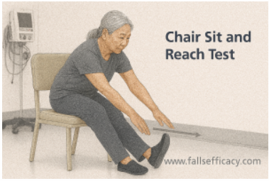
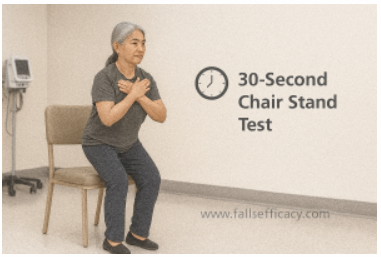
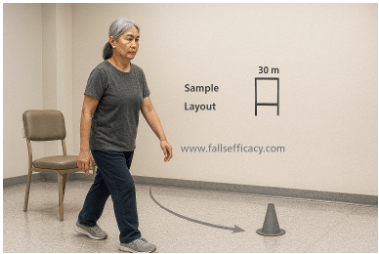
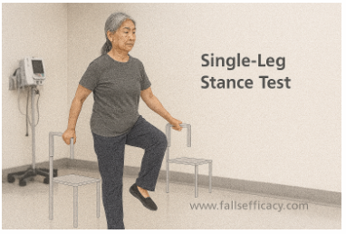
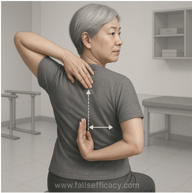

Functional Fitness Tests
Evidence-based assessments used to evaluate strength, balance, flexibility, agility, and functional independence in adults and older populations.

Chair Sit and Reach Test
Assesses: Lower-body flexibility (hamstrings & lower back)
The Chair Sit and Reach Test evaluates the flexibility of the posterior chain, primarily the hamstrings. Limited flexibility in this region is associated with impaired gait, difficulty in bending, and increased fall risk.
Steps
- Place a standard chair against a wall for stability.
- Ask the participant to sit on the front edge of the chair with one foot flat on the floor.
- Extend the other leg straight in front with the heel on the floor and ankle dorsiflexed (toes up).
- Keep the knee of the test leg straight (do not allow bending).
- Place one hand on top of the other, arms extended, and ask them to slowly reach forward toward the toes.
- Hold the farthest reach position for ~2 seconds without bouncing.
- Measure the distance between fingertips and the toes:
- Positive score if fingertips go beyond toes
- Negative score if fingertips do not reach toes
- Zero if fingertips just touch toes
- Perform 2 trials per leg; record the best score for each side (or the best overall, as per your protocol).
This test is particularly useful in older adults, post-stroke patients, and individuals with musculoskeletal stiffness where floor-based flexibility tests are unsafe or impractical.

Chair Sit-to-Stand Test
Assesses: Lower-limb strength & functional power
The Chair Sit-to-Stand Test measures the strength and endurance of the quadriceps, gluteals, and hip extensors — muscles essential for transfers, stair climbing, and independent mobility.
Steps
- Use a standard chair (no wheels), placed against a wall.
- Participant sits in the middle of the chair, feet flat, hip-width apart.
- Arms are crossed over the chest (hands on opposite shoulders).
- On “Go”, the participant stands fully upright and then sits back down.
- Count repetitions for a fixed duration (commonly 30 seconds) OR time for a fixed number of reps (as per your protocol).
- Ensure full stand each time (hips and knees extended) and full sit (controlled contact).
- Stop if unsafe symptoms occur (dizziness, chest pain, severe imbalance).
- Record total completed repetitions and note compensations (momentum, incomplete stands, trunk sway).
Reduced performance is strongly correlated with sarcopenia, frailty, and loss of independence in older adults.

8-Foot Up and Go Test
Assesses: Agility, dynamic balance, and mobility
This test evaluates how quickly and safely an individual can rise from a chair, walk, turn, and sit down — mimicking real-world functional tasks.
Steps
- Place a cone/marker exactly 8 feet (2.44 m) in front of the chair.
- Participant sits with back against chair, hands on thighs, feet flat.
- On “Go”, participant stands, walks safely to the cone, turns, walks back, and sits down.
- Start timing on “Go”; stop timing when they sit down again.
- Allow use of usual assistive device (cane/walker) if needed; document it.
- Give 1 practice trial, then 2 timed trials.
- Record the best (fastest) time in seconds.
It is a validated predictor of fall risk and is widely used in geriatric, neurological, and orthopedic rehabilitation settings.

Single Leg Stance Test
Assesses: Static balance & postural control
The Single Leg Stance Test assesses the ability to maintain balance on one limb, requiring integration of visual, vestibular, and proprioceptive systems.
Steps
- Stand near a stable support (wall/rail) for safety without holding it unless needed.
- Participant stands upright, feet together, eyes open.
- Ask them to lift one foot off the ground without touching the stance leg.
- Start timing when the foot leaves the floor.
- Stop timing if:
- Raised foot touches the floor
- Stance foot moves/shifts substantially
- They grab support
- Perform 2–3 trials on each leg; record best time (seconds) per side.
- Optional progression: eyes closed (only if clinically safe and required).
Poor performance indicates increased fall risk and neuromuscular impairment, especially in elderly and neurological populations.

Hand Curl Test
Assesses: Upper-body strength & endurance
The Hand Curl Test measures strength and endurance of the elbow flexors, primarily the biceps brachii.
Steps
- Participant sits on a chair with good posture, feet flat.
- Choose correct weight (commonly: 2.3 kg/5 lb for women, 3.6 kg/8 lb for men) unless your protocol differs.
- Hold dumbbell in the dominant hand, arm down at the side, palm facing forward.
- On “Go”, curl through full range and return to full elbow extension.
- Count total correct repetitions in 30 seconds.
- Avoid trunk swinging or shoulder hiking; keep upper arm close to torso.
- Record repetitions and compensations (momentum, partial ROM).
Upper-limb strength is essential for lifting objects, carrying loads, and performing self-care tasks.

2-Minute Step Test
Assesses: Aerobic endurance
This test evaluates cardiovascular endurance by measuring how many steps an individual can perform in two minutes while maintaining proper knee height.
Steps
- Participant stands near a wall/chair for balance if needed (avoid heavy leaning).
- On “Go”, begin marching in place for 2 minutes.
- Count steps using a consistent rule (commonly count only right knee hits target height).
- Allow brief rest if needed (timer continues).
- Stop if unsafe symptoms occur (dizziness, chest pain, severe dyspnea).
- Record total steps and any rest breaks.
It serves as a safer alternative to longer walk tests in populations with limited space or mobility.

Back Scratch Test
Assesses: Shoulder flexibility & upper-limb range of motion
The Back Scratch Test measures combined shoulder flexion, extension, abduction, and internal/external rotation and reflects functional reach for grooming and dressing.
Steps
- Participant stands tall (or sits if needed), feet shoulder-width.
- Place one arm over the shoulder reaching down the back (elbow up).
- Place the other arm behind the back reaching upward (palm outward).
- Try to touch/overlap middle fingers without forceful jerking.
- Measure distance between middle fingertips:
- Positive if fingers overlap (record overlap length)
- Negative if fingers do not meet (record gap)
- Zero if they just touch
- Perform 1 practice, then 2 measured trials.
- Repeat with arms swapped (right-over-left and left-over-right).
- Record best score each side; note pain and compensations (trunk side-flexion, shoulder shrug).
It is especially relevant in post-stroke, adhesive capsulitis, and older adults to track shoulder mobility limitations.